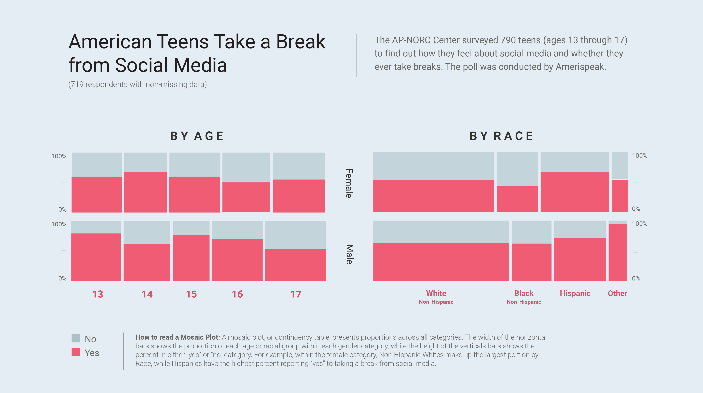

Tapping into the Minds and Behaviors of Teens
NORC’s AmeriSpeak Teen Panel gives fast, reliable access to teen opinions
Everyone from parents and educators to marketers and policymakers wants to know what teens think and how they form their opinions. But due to a variety of factors, including the need to secure parental consent, surveying teens can be challenging and costly. The AP-NORC Center is working closely with AmeriSpeak to launch AmeriSpeak Teen, a teen-focused version of AmeriSpeak’s probability-based panel of pre-recruited survey participants. AmeriSpeak Teen’s pilot study examined teens’ views on current events and American politics, their use of social media and messaging apps, and their attitudes toward social media. The study also broke new ground examining if and why teens take breaks from social media. Among the results:
- While many teens report that social media makes them feel more informed and connected to friends and family, 58 percent say they have taken some type of break from their platforms.
- Among those taking a social media break, 65 percent say their break was voluntary; half left their social media platform involuntarily.
- Teens who have NOT taken breaks say they stay on social media because they don’t want to miss out on what is going on (56 percent) or because social media is how they find out what is happening in the world (44 percent).